2026-10-22 正手架拍与发球复盘
快速结论
教练让你提前架拍的方向值得继续：让转肩和右手准备接起来，为下降及向前上方挥出留时间。本次拍喂、对拉都有完整样本，但10月18日也已有准备与落拍，暂不宣称整体上旋或深度已经提高。
下次只留一个正手口令：“转肩带拍，脚下找距，连续挥出。”发球单独练抛球与挥拍节奏，不照搬正手早架拍。先提高重复性，再用过网余量和深区验证，不额外强压手、翻腕或前扑。
这次的素材
三段共约40分37秒，包含讲解、正手拍喂、底线合作对拉和发球。以下基于总览与选定连续窗口复核，不是40分钟逐球统计。更新为4个复核重点、8段约36秒的连续证据；关键动作通常在短片第17–20秒，前后保留多拍和恢复语境。第一组拼图包含上次/本次对照，视频只对应本次。片段之间可能有讲解、重新开球或部分出画，它们不是技术判断依据。
| 原片末尾编号 | 时长 | 内容与用途 |
|---|---|---|
| 063：220004 | 8:04 | 教练讲解、近距离正手拍喂。检查架拍、下降和挥出的连接。 |
| 065：223055 | 20:56 | 前部讲解和拍喂，后部底线合作对拉。检查动作迁移、移动及击后衔接。不是20分钟无间断相持。 |
| 067：225154 | 11:36 | 包含教练发球示范、无球模仿与用户发球；后部有可复核实击。 |
分析对象是黑衣、黑短裤球员；浅色上衣为教练。手机位于底线后方偏左的斜后方，部分正手移到右侧画外。三段均为1080p、约30fps夜间拍摄，足够看整体动作顺序，不适合测旋转、精确拍面或球速。
你和教练提供的线索
你补充：教练主要纠正上旋，认为侧身虽早，但右手开始架拍较晚；提前架拍后，可以有自然下落再接击球的连贯性。你也感觉提前准备后更容易打出上旋。
这是用户转述的现场指导，不是音频转录。我用它确定要核查的环节，但不把它自动当作每个击球都已被视频证明的问题。这里的“自然下落”是动作提示，画面不能直接测量肌肉是否放松。
主要问题
1. 侧身不等于架拍完成：把右手准备接入整体转动
判断与把握：
确定：本次有完整架拍、下降和挥出。待验证：右手准备相对身体侧转是否在多球中持续偏晚。教练的现场判断与用户体感是重要线索，但不同球的来球时间没有统一标记，不能仅凭侧身和抬手之间有先后，就宣布准备一定晚。把准备连接列为优先练习，不能写成每球都存在的确诊错误。
画面所见：
065约08:11.3–08:11.8，右手带拍抬起并形成准备；08:12.2–08:12.5，拍头下降并转入挥出。这说明你在对拉中能保留“架拍—下降—挥出”。但同一视频20:24–20:25的准备展开过程不同，部分拍头还出画，暂时不能宣布时序已经稳定。
职业参考对照：
采用你上传的白衣德约训练视频B，不使用刚才未经筛选的网络视频。B约01.8–02.1，转肩与球拍准备相伴，02.2–02.5再接下降、转体和挥出。你的08:11.5–08:12.5也有这些环节。可借鉴的是连接顺序，不是复制他的引拍大小、拍头高度或屈膝角。双方来球、机位不同，不能说你比他慢了多少，也不能因你某帧不同就判错。
教练式建议：
保留教练的提前架拍提示，把它理解为“认出正手来球后，转肩时右手和球拍也进入准备”，不是只把拍头举高，也不是把手臂拉得越远越好。架拍可以在移动中进行；提前准备的价值，是为判断落点、找距离和连续挥拍留时间，而不是提前定住等球。
对照怎么看：
第一段短片原片07:54起，约第17–20秒看08:11–08:14；第二段原片20:07起，约第17–20秒看20:24–20:27。拼图上排是10月18日057约00:24.7–00:26.5，下排是10月22日065约08:11.5–08:12.6。两次都有准备和下降，不能按格数比快慢。上次报告需补充的是“转肩和右手准备分别检查”，不是改成“上次完全没有落拍”。
训练验证：
固定相近来球连续取5球，和教练分别标出转肩开始、右手进入准备、来球落地和挥出。加提前架拍口令后，若更少临时补抬拍、挥出不赶且落点不变差，才说明提示对你有效；不是以像不像德约作合格标准。
证据片段：
flow_vid_20261022_223055_02_065/90_00-08-12flow_vid_20261022_223055_02_065/95_00-20-25
2. 身体升降本身正常：不把起伏直接判成屈膝不足
判断与把握：
确定：准备、挥拍和恢复的身体高度会变化，你确实有屈膝。不能确定：是否过早伸腿、是否过度弯腰，或这种变化是否导致失误。修正上一轮聊天中容易让人误解的“准备偏直立”：它是某个阶段的外观描述，不是已证实的技术错误。现在不要求你一直蹲低。
画面所见：
063约05:18.9–05:19.5，膝部屈曲、躯干降低并转动；05:19.6–05:20.1，随挥和跟步后身体升高。另一组02:18–02:20也有降低、挥出、再组织支撑。065约08:11.8–08:12.8有相似过程。这些画面不是“完全没用腿”，也没有清楚证明在触球前就错误地站起。
职业参考对照：
B约01.3–01.7，德约准备时也相对较高；02.0–02.3屈髋屈膝更明显；02.5–03.0随挥后升高。他不是从头到尾保持同一个蹲姿。你和他都有升降，真正要检查的是降低、转动和挥拍是否配合这颗球，而非谁更低。屈膝形态看上去不同，不能跨机位用像素或目测角度给你打分。
教练式建议：
优先把准备时序稳定下来，再让拍头相对这颗来球获得合适的下降与向前上方路径。不需要每球把右手压到膝盖，不锁直肘，也不突然翻腕。来球高度变了，合理的最低拍头位置也会变。打深仍要兼顾向前的出球，不要为了刷球只剩向上、球却变短。
看片提示：
两段短片分别从05:01、02:01起；关键挥拍在各自约第17–20秒。第一段看05:18–05:20，第二段看02:18–02:21。先跟踪头、髋、膝如何配合，再看拍头。放低右手不能替代下肢支撑，身体升高也不能单独证明上旋或发力有问题。
训练验证：
让教练拍持拍手侧面、相近高度的5个慢球。只检查是否靠临时弯腰找低球、是否出现触球前突然抬头伸腿；若没有，不把“更蹲”设为改造目标。固定喂球里自然随挥后能控制身体，再回准备，比摆出更低的姿势更有意义。
证据片段：
flow_vid_20261022_220004_02_063/91_00-05-19flow_vid_20261022_220004_02_063/94_00-02-19
3. 身体侧倾不等于失衡：检查击球空间和恢复是否可控
判断与把握：
确定：部分挥拍上身倾斜，且脚下同时在转换支撑；也能看到击后恢复。低把握的假设：某些球可能需要更充分的最后距离调整。目前不足以认定你是“脚不动、靠上身够球”，更不能诊断核心无力或重心失控。撤回把这种外观直接当作问题的暗示。
画面所见：
065约08:11.8–08:12.3，上身向画面右侧倾斜，但两脚也在改变支撑；08:12.5–08:13.3转体、跟步并回到持拍准备。07:51–07:55能看到另一组调整和回位；15:03–15:05先移向右侧再回内侧，右缘出画部分不判断触球。不能只截一帧就认定身体歪或没有恢复。
职业参考对照：
B约02.1–02.5，德约的躯干也不是始终竖直，左臂先展开、随后收回；02.5–03.0随挥后重新组织持拍。你在08:11.8–08:12.6也有左臂参与和转体，不是“左臂完全没用”。他的示范更适合帮助理解支撑、转动和恢复的连续性，不证明你的侧倾一定多余，也不要求复制他的站位宽度或收臂时刻。
教练式建议：
下一步不是刻意多跳几下，而是让每次移动有用途：识别方向时转肩带拍，最后调整身体与球的距离，挥完立即衔接下一拍。提前架拍不等于双脚提前钉住。增加少量左右、深浅变化，比只在原地重复顺手球，更能检查新节奏是否经得住来球变化。
看片提示：
两段分别从07:35、14:46起。约第16–21秒看07:51–07:56、15:02–15:07，先看最后调整与身体侧倾的关系，再看击后能否回到可启动状态。出画、重新开球和间歇不作为失误或体能证据。开放式站位、弯臂、交叉步都不独立判错。
训练验证：
先用固定慢球，再加少量左右变化。目标是减少临时缩手或探身补距离，随挥自然接恢复。记录连续5球里能否有空间挥出并准备下一拍，而不是刻意把胸挺直、头钉死或双脚固定。单独的慢速平衡练习可以停一瞬检查控制，不在真实对拉里刹住挥拍摆造型。
证据片段：
flow_vid_20261022_223055_02_065/92_00-07-53flow_vid_20261022_223055_02_065/96_00-15-04
4. 发球有完整动作：先稳定抛球与挥拍节奏，不急着追力量
判断与把握：
确定：有完整发球动作的主要环节。暂未找到证据足够强、在所选实击中反复出现的共同错误。因此本项是发球复测重点，不是“姿态丑”的技术诊断，也不宣称发球效率已经良好。
画面所见：
067约08:09、09:31和10:54的实击，都能看到抛球臂上举、持拍臂随后进入准备、屈膝、拍头绕后下降、向上挥出及前脚落地。不是只有手臂把球推过去。但三记球不是完整的成功率样本，画面也不能可靠确定握拍、抛球前后位置、触球时肘的精确伸展或内旋质量。
职业参考对照：
你上传的A是上下两位球员的发球拼接，而非正手；可提醒我们：不同球员的抛球、举拍和腿部配合允许有不同节奏。没有原始拍摄、速度和同步说明，不按上下两幅的同时刻判断谁更标准，也不据此要求你的持拍臂必须与抛球臂同时举起。B的正手参考不能拿来诊断发球。
教练式建议：
目前先让抛球位置、上举到挥出的节奏和击后平衡可重复，再增加速度。持拍臂比抛球臂晚一些上举，本身不等于错误，不要因为正手练早架拍，就把发球也改成提早举住等球。抛得明显不合适可以接住重来，不靠临时歪身追球。具体抛球窗口由现场教练按你的发球类型确认，不先强改为更高、更低或更靠前。
看片提示：
两段短片从10:36、07:51起；关键动作在约第17–20秒，分别对应10:53–10:56、08:08–08:11。观察从抛球到落地的完整节奏，不只截一个奖杯姿势。屈膝、离地、后腿抬起可以是正常动作，不据此要求更大后仰、更高起跳或压腕。
训练验证：
先各记10次抛球的可用数与10次实际发球的入区数，两个分母分开；再看坏抛球是否伴随临时追球或落地难控制。由教练确认适合你的抛球窗口，不从这三记画面推导固定米数和角度。
证据片段：
flow_vid_20261022_225154_02_067/93_00-10-54flow_vid_20261022_225154_02_067/97_00-08-09
职业参考与姿态评估方法
本次采用用户上传的B：oUC7ZqAFfABKAWDLAMDfTiIgYF9u2vSAjDEIAQ.MP4（10.4秒、720×1280、30fps编码）。白衣德约的常规正手、全身支撑和击后动作较清楚，主观察窗01.3–03.0秒；00秒已在挥拍中，08.5秒后有镜头变化，不把它们接成同一球。A：oAp0rTIffAMzAwAjIEGDFIezY4Wf2ZwQlAmm8A.MP4（4.83秒）是发球对比，排除出正手评估。用户提供参考不等于已经获得官方技术认证；原作者、拍摄日期和变速情况未核实。
新增参考C：用户下载的792746205643.MP4，对应[用户提供的YouTube链接](https://www.youtube.com/watch?v=Nw_2I2ksX3U)，7分32秒、640×360、25fps编码。已看全片总览，并复核00:00–00:32、02:00–02:10及00:07、00:09、00:11、00:13附近的动作细节，不声称逐帧看完全部7分钟。它的常规训练、正面斜角和部分侧后方有助于看球拍路径及身体支撑；呈慢放特征、包含转场，原慢放倍率未知。B用于看短段连续衔接，C用于补看动作细节，两者不互相替代。
C约00:03–00:07，球拍处于较高准备，非持拍臂展开；00:08–00:12能跟踪球拍下降以及向前挥出的连接；00:12–00:20可见随挥、身体升起与跟步。这补强“准备不只是右手单独后拉”的参考原则，并不能证明你在相近来球下准备晚。C有从较高准备到降低、再转动升起的过程，因此仍不支持把你的身体升降独立判错。约00:21发生转场，不把转场前后当作同一球，也不把随挥截图硬标成已完成下一拍准备；要比较下一拍状态优先看B约02.7–03.0。
职业参考原视频留在本地参考库，未上传整段职业录像。公开页面呈现你的8段连续证据，并按本次动作评论需要加入5组配对截图及参考C的3张连续阶段截图，每张标注原文件时间。B为用户提供短片，原作者与原始速度未核实；C对应用户下载的Love Tennis视频，页面保留来源链接。不宣称已取得原视频的转载授权，也不把截图当作可自由复用的素材库。本地另有双视频按阶段定位的对照页。核心原则依据USTA，不把某位职业球员的外形当唯一标准。
| 动作阶段 | 德约B中的可见过程 | 你的对应过程 | 评价规则 |
|---|---|---|---|
| 准备与调整 | 01.3–01.7较高、脚步仍调整 | 065约08:09.8–08:11.3有横向调整 | 不以站得较高单独判错；看是否可启动 |
| 转肩与架拍 | 01.8–02.1转肩带拍、左臂展开 | 08:11.5–08:11.8转肩抬拍 | 分开标记再检查连接，不以同一截图角度比较 |
| 降低与下降 | 02.0–02.3髋膝屈曲，拍头转入下降 | 08:11.8–08:12.3降低并侧倾 | 侧倾与屈膝都可能正常，不能反推足底压力 |
| 挥出与升起 | 02.4–02.6转体、挥出、身体升高 | 08:12.3–08:12.8转体随挥 | 模糊触球不测精确先后，不把升高叫过早起身 |
| 恢复与下一拍 | 02.7–03.0重新组织持拍 | 08:13.1–08:13.3回身前准备 | 还要结合对手下一次触球，才可评价是否及时 |
以后每条报告固定包括：判断与把握、原片与短片时间、可见事实、参考原则与差异、训练及验证；更深的分阶段解释可展开。至少列一个反例或不确定项，区分确定现象、待验证原因和当前不能判断。没有统一逐球计数，不写“经常”、失误主因或进步百分比。任何“看起来不舒展”都必须回到击球空间、球路结果或下一拍衔接，才升级为技术问题。
和10月18日相比
| 观察项 | 10月18日 | 10月22日 | 目前能下的结论 |
|---|---|---|---|
| 高位准备与下降 | 057约00:24.7起已有准备；00:26.3附近已有下降 | 拍喂05:19、对拉08:12都有相应链条 | 不是从没有到有；重点改为右手准备时机与重复性 |
| 对拉迁移 | 能做出，但不能据单球确认稳定 | 新对拉里也能保留准备、下降和挥出 | 动作能力存在；尚未证明整体稳定率提高 |
| 脚步与恢复 | 已有转体、下沉与击后移动 | 有横向调整和回到准备的样本 | 不简单贴“懒”标签；检查是否与来球同步 |
| 上旋、深度、下网 | 没有可靠转速或逐球结果统计 | 本次仍未完成这些测量 | 不给虚假的进步百分比 |
| 发球 | 上次这组以正手为主 | 本次另有发球实击 | 建立新观察项，不宣称发球已改善 |
这次最明确的进展是训练方向更具体：从泛泛的“手放低”，变成“右手准备不要脱离整体转肩，给下降和前挥留出时间”。这是训练重点的明确，不等于已证明球质提升。你自己更容易打出上旋的感觉值得保留，再用落点和失误结果验证。
其他维度检查
- 击球结构：有转体、屈膝和非持拍臂参与；不建议此时同时推翻握拍、肘形和随挥终点。
- 正反手衔接、接发、网前：本次没有选出足够清楚、连续且可比的样本，不据此给评分或杜撰短板。
- 战术：以教练练习与合作对拉为主，无明确计分和任务说明；不能把练习中的回中、喂球或重新开球当成比赛决策失误。
- 体能：没有统一强度、休息与前后对照，不把后段偶尔站直或捡球判定为疲劳。
- 击球空间：仍值得持续检查，但右侧出画和单一斜后方机位限制了“挤住、击球晚”的确定诊断。
动作差异与修改优先级
本次补充截图对照：准备调整、转肩架拍、降低与下降衔接、随挥升起、击后恢复。你的视频统一取065约08:11.133、08:11.800、08:12.367、08:12.633、08:13.300；德约B对应01.600、02.000、02.300、02.600、03.000秒。这是相同动作阶段的观察窗，不是严格同步或相同来球；下降组双方处于窗口中的不同进程，不能把拍头高度差直接判成不足。参考C另取00:07、00:11、00:13，未跨转场，不按慢放秒数比较速度。只裁切与等比例缩放，没有翻转、拉伸、补帧或生成式修图。
结论：优先改善动作的组织与重复性，不把外形改成德约。你已经能完成转肩、架拍、球拍下降、挥出和恢复；练习目标是来球变化后仍能保留这些连接。以下依据已复核窗口，不是全场逐球统计；职业参考有慢放、机位和来球差异，不计算双方动作速度差。
| 环节 | 德约参考与对应证据 | 你的表现与修改优先级 |
|---|---|---|
| 转肩与架拍 | B约01.8–02.1秒转肩带拍、左臂展开；C约00:03–00:07看高位准备 | 065约08:11.3–08:11.8也能做到。第一优先：稳定转肩与持拍准备的连接；现场教练反馈是重点验证线索，不认定每球都晚。 |
| 球拍下降到挥出 | C约00:08–00:12，下降接向前挥出 | 065约08:12.2–08:12.5也有下降。第二优先：在对拉中保留连续节奏，不临时补抬拍或强压手臂。 |
| 屈膝与身体升降 | B先较高、再降低、挥出后升起 | 你也有这些阶段。正常变化，不要求一直蹲低；目前不足以证明屈膝不足或过早起身。 |
| 侧倾、站位与弯臂 | 德约也有侧倾、弯臂和支撑转换 | 本身允许有个人差异。检查是否反复挤住、伸够或妨碍恢复，而不是追求每帧挺直。单一斜后方机位不能确诊这些原因。 |
| 随挥与恢复 | B约02.7–03.0重新组织持拍 | 你在065约08:13.1–08:13.3也有恢复。检查对手下一次触球时是否可启动，而非复制他的随挥终点。 |
正常个人差异：引拍大小、拍头准备高度、站位宽度、开放或半开放站位、肘部弯曲和随挥终点。只有反复妨碍击球空间、落点或下一拍，才升级为修改对象。不能据此外推核心弱或身体不协调。
执行顺序：先练转肩带拍，再迁移到变化来球，最后用入界、下网和深区落点验证。不靠更低的拍头或更像职业球员的截图判定进步；低到高的路径帮助上旋，但还要保留向前的出球，避免只向上刷而越打越短。
下次训练：60分钟执行表
每组只留一个注意点。以下数字是练习安排，不是你的现有成绩或职业合格线；有教练时按现场情况调整休息与难度。
| 时间 | 练习 | 怎么做 | 本组只想 |
|---|---|---|---|
| 0–8分钟 | 热身、短场合作击球 | 逐步进入底线，不急着改动作或加速。 | 自然进入节奏 |
| 8–18分钟 | 固定正手拍喂 | 3组×10球，约六成速度；组间休息并听一次反馈，不刻意压手或加大引拍。 | 转肩带拍 |
| 18–30分钟 | 喂球转对拉 | 每轮3颗固定喂球，接最多5拍慢速合作对拉，约6轮。失误重开，检查是否又临时补架拍，不硬凑拍数。 | 保留准备到挥出的连接 |
| 30–42分钟 | 小范围移动正手 | 可控范围内改变左右、深浅，3组×8球。提前准备后仍调整距离，挥完自然接恢复。 | 脚下找距 |
| 42–52分钟 | 深度验证 | 2组×10颗可正常处理的正手来球；瞄中间大区域，把对方底线内约3米设为深区，不追边线、不加力量。不能形成有效击球的来球单独注明。 | 向前上方连续挥 |
| 52–57分钟 | 发球独立练习 | 10次抛球检查可用性，再10次实际发球记录入区；明显坏抛球接住重来，不把正手早架拍直接套到发球。 | 可重复的节奏 |
| 57–60分钟 | 放松与记录 | 记录下表与教练最有效的一个口令。 | 留下可比较的结果 |
现场口令：转肩带拍，脚下找距，向前上方连续挥。分组分别练，不在一次挥拍里同时检查所有细节。
训练记录与拍摄
深度验证按20球记录入界、下网、深区入界。深区入界是入界的子集；出界等其他结果不必强行归入下网。请教练另抽看连续5球，记录临近挥出才补架拍的次数。抛球与实际发球分别计10次，不能共用分母。空白代表未记录，不是0。
比较条件：尽量保持喂球速度、站位、目标区相近，固定喂球与对拉分别看，不直接把固定喂球成绩拿去和比赛比较。若感觉顺了但球明显变短或失误更多，先降低难度，不继续加速。
拍摄：同一机位各拍约2分钟固定拍喂、合作对拉；有余力加持拍手侧面1分钟。横屏、固定、正常速度，尽量1080p/60fps，包含全身、脚、完整球拍；保留失败球。文件随下一次训练视频一起提供，我们再复核动作连接与落点结果。
下一阶段训练重点
以下是个人练习建议和待验证目标，不是本次测得的成绩，也不是职业技术标准。现场教练给你的口令优先，不在一组球里叠加多个新要求。
重点1：转肩带拍，先把准备做成一个动作
目标：让右手进入准备与身体侧转相连接，而不是单独追求拍头举得更高。
方法：
- 5分钟，固定拍喂10球一组，共3组，先用六成速度；每组只想“转肩带拍”。
- 教练帮助核对：来球弹起前后，是否已经进入可继续下降、挥出的准备，而不是临近挥拍才补做架拍。落地只是相近常规来球的观察参照，不是所有球都必须遵守的死时间点。
- 提前架拍后继续小步调整，不举住僵等，也不故意停在最低拍头处。
合格标准：
先争取每组至少7球，被教练认可为准备、下降、挥出连贯且入界；达不到就降低来球难度，不急着加速。这是下一次练习目标，当前未计数。
重点2：从固定拍喂迁移到带一点变化的对拉
目标：把架拍和找距离一起带入对拉，避免只能打预先知道落点的球。
方法：
- 10分钟，每轮3球固定拍喂，再接5球慢速合作对拉。
- 先相近高度、同一正手区域；能连续后，只增加一种变化，例如左右各一点或一深一浅，不同时加球速和落点难度。
- 每球挥完回到可启动准备，不要求每次站回完全相同的点。需要恢复到哪里，取决于球路与练习任务。
合格标准：
连续5拍中，先争取至少3拍能保留准备到挥出的连接；两轮做到后再增加变化。若出现站住等球或挥拍挤在一起，退回简单来球复现。
重点3：用过网和深区验证上旋提示是否有效
目标：提前准备最终要换成可重复的球路，而不是只让截图看起来更标准。
方法：
- 5分钟，六至七成速度打大目标区。由教练设过网余量，可从高于网带约1米的练习窗口试起，再按实际球路调整。
- 深区定义保持为对方发球线至底线之间，只有入界才算深区命中。每20球记入界、下网、出底线和深区数，落点看不清的记未知，不硬算。
- 用相近喂球分两组：先正常打，再只加“转肩带拍”提示，比较结果。不以某一球的高随挥宣布旋转增加。
合格标准：
先建立真实基线，再看提示后是否能在不增加失误的前提下增加深区球。不直接套用未测量的个人水平或上次建议目标作为已达标成绩。
重点4：发球单独练节奏与抛球可重复性
目标：让完整动作和可用抛球重复出现，再追求速度。
方法：
- 5–8分钟，先做5次不击球的抛球，由教练确认适合你的可用窗口，再做两组各10次六成发球，左右发球区分开记录。
- 抛得明显偏离窗口就接住重来；记录“可用抛球次数”和“实际击球中的入区次数”，两种分母分开。
- 保持顺畅上举与向上挥出，击后回到可继续下一拍的准备；不靠刻意压腕、追加后仰或跳高来追力量。
合格标准：
先记录10次抛球里多少次可用、10次实击里多少次入区，作为本次后的首个发球基线。当前录像未做完整逐球计数，不写现有成功率。
下次复测只记这些
| 项目 | 怎么记录 |
|---|---|
| 架拍时机 | 同机位连续5球，分别看转肩、右手准备、下降接挥出；不只挑最好的一球 |
| 对拉迁移 | 固定拍喂与对拉各一段，相近高度、正常速度，保留失败球 |
| 球路结果 | 每20球记入界、下网、出底线、深区与未知 |
| 发球 | 可用抛球/总抛球；入区/实际实击，分开发球区 |
这次固定机位比跟随拍摄更利于对照，但右侧有出画。下次先试打两球，检查最右侧正手仍包含全身和完整球拍；增加持拍手一侧的侧面短片，有助于检查击球空间和发球抛球前后位置。原片保留正常速度，支持时用60fps；慢放不能恢复原本没拍到的触球瞬间。
方法与限制
- 原片已从incoming移动归档到raw/2026-10-22，未复制第二份，未删除原片。
- 自动扫描24个候选仅作索引，未全部批准为技术证据；扩展为8个公开证据窗口，并补看拍喂、对拉、发球、旧片与用户提供职业参考的连续序列。
- 总览和低频采样用于定位；关键窗口用6fps、15fps查看，时间码为重采样名义时间，不作精确触球测量。对照图明确区分日期，不按格数比较速度。
- 正式结论只针对目标球员的有效动作。排除教练示范、无球模仿、捡球与明显出画的技术细节。
- 本次没有运行人体姿态模型；肩髋膝踝关键点也不能代替球拍路径、拍面或球的旋转测量。没有虚构overlay或姿态数字。
- 正手新旧对照与发球判断边界均做了独立agent复核；仍不代替现场教练看到的全部训练过程。
参考依据
- [USTA：正手整体转动](https://www.usta.com/en/home/improve/tips-and-instruction/national/improve-your-tennis-game--get-your-forehand-flowing.html)：用身体整体准备带动球拍，不把引拍简化为单独向后拉手。它支持训练原则，不证明你的某一球有错。
- [USTA：正手基础](https://www.usta.com/en/home/improve/tips-and-instruction/national/learning-the-basics--forehand.html)：击球空间、拍面控制和适合水平的挥拍速度共同影响稳定性。
- [USTA：产生上旋](https://www.usta.com/en/home/improve/tips-and-instruction/national/improve-your-tennis-game--a-quick-tip-for-creating-topspin.html)：低到高的挥拍路径可用于上旋练习；不能从单张随挥图反推旋转量。
- [LTA：脚步与恢复](https://www.lta.org.uk/play/tennis-tips-and-techniques/improve-your-tennis-footwork-on-court-with-these-simple-tips/)：脚步服务于到位、调整与下一拍，不是单纯增加步数。
- [USTA学校网球队教学手册](https://www.usta.com/content/dam/usta/content-fragments/tennis-service-center/assets/pdfs/Net-Generation-High-School-Team-Tennis-Manual.pdf)：发球的准备、抛球、加载、挥拍与结束应整体理解；不拿固定姿势作所有人的唯一模板。
总结：继续跟教练练提前架拍，但真正追踪的是“准备连贯、脚下留空间、出球有余量且够深”。发球先建立稳定节奏和真实基线，不在同一次练习里推翻所有动作。
按动作阶段看截图
按动作阶段对应，不是同一来球或逐帧同步。机位不同、慢放倍率未知，不测关节角、速度差、触球拍面或上旋转速。仅裁切及等比例缩放，无拉伸、翻转、补帧或生成式修图。截图时间为原文件定位，不是精确触球测量。
左侧是你，右侧是德约。每组有原文件时间码；可打开原图放大。B为用户提供的短片，原作者与原始速度未核实；C对应用户下载的Love Tennis视频。仅选取用于本次动作评论的少量截图，未上传职业录像原片。
01 · 准备与调整
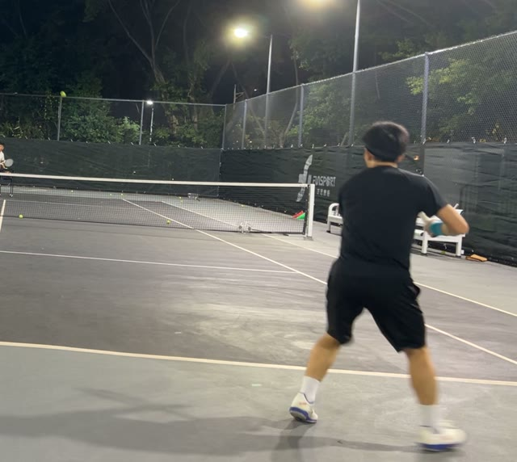
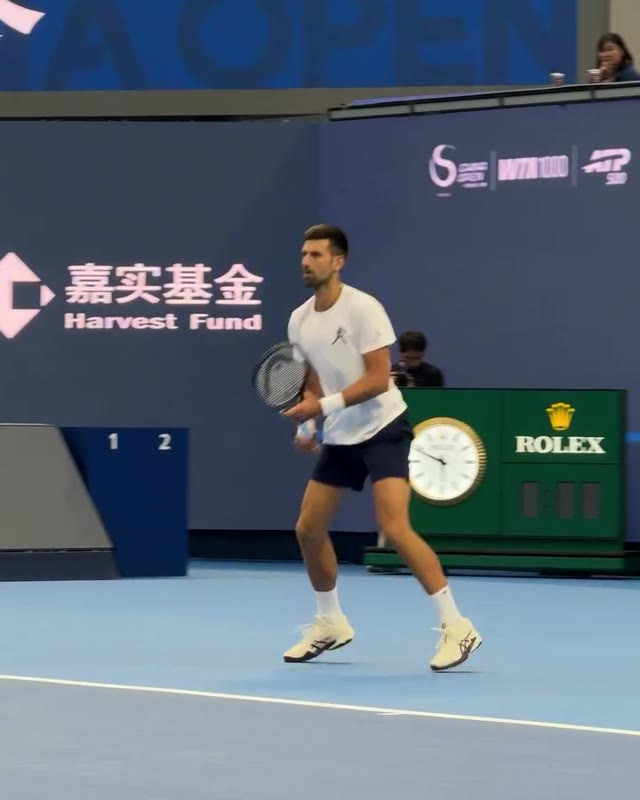
画面差异：两人准备时都不是一直蹲低，脚下仍在调整。你这帧是面向对方场地的待击球状态，不是背向场地走动。
正常差异与限制：准备姿态较高、站位宽度不同，本身正常；斜后方与侧前方的视觉差异也会改变外观。
你该怎么练：暂不把一直蹲低作为目标。检查对手击球附近是否可启动，不能靠这张静帧判断垫步时机。
02 · 转肩与持拍准备
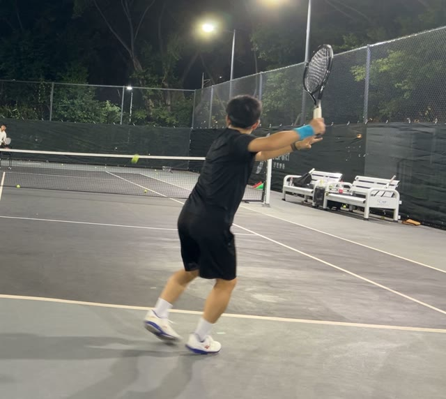
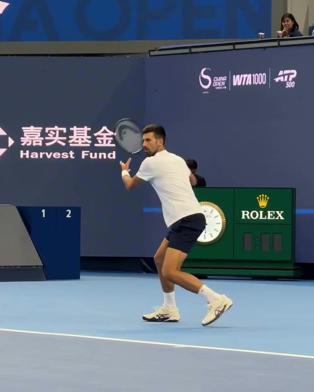
画面差异：你的这张选帧持拍臂向侧上方展开更明显，德约这张持拍手更靠近躯干。两人都有转肩与非持拍臂参与，你不是没有架拍。时点和机位不同，不能据此确诊你的引拍过大。
正常差异与限制：引拍幅度、手肘弯曲和球拍高度允许不同，不能按截图高度给优劣分。
你该怎么练：优先级1：按现场教练提示，让转肩时持拍准备也跟上。是否偏晚要回看连续片段和来球，截图本身不能证明。
03 · 降低与下降衔接
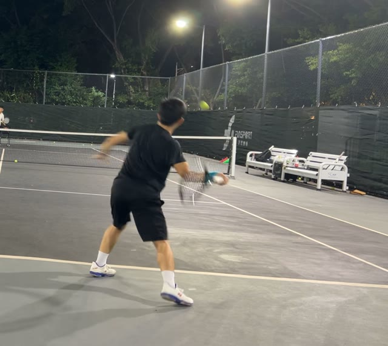
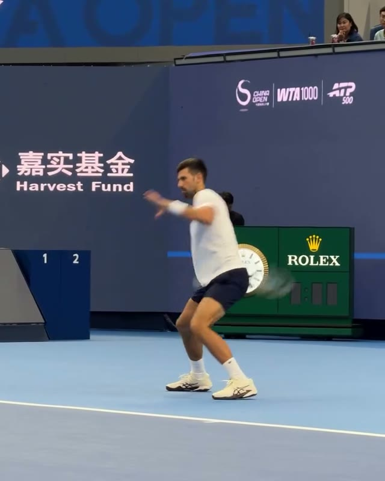
画面差异：你的选帧已见球拍降到持拍手下方附近并随转体挥出，上身侧倾较显眼；德约选帧的髋膝降低与身后下降更显眼。双方处于该窗口的不同进程，不是同步触球时刻，不能直接比较膝角或拍头最低点。
正常差异与限制：降低幅度、躯干倾斜和手臂形状不必一样；单帧无法证明重心失控、核心弱或拍头一定不够低。
你该怎么练：优先级2：在对拉中给下降到挥出留出时间，不强压手到膝盖，不为复制姿势临时弯腰。
04 · 随挥与身体升起
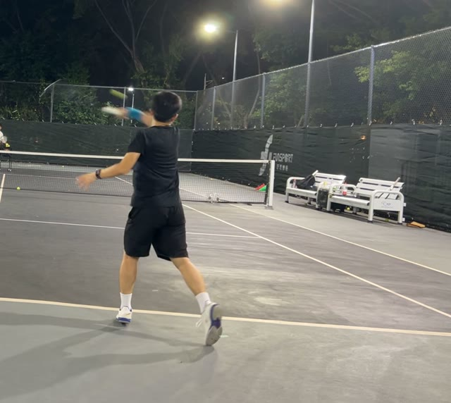
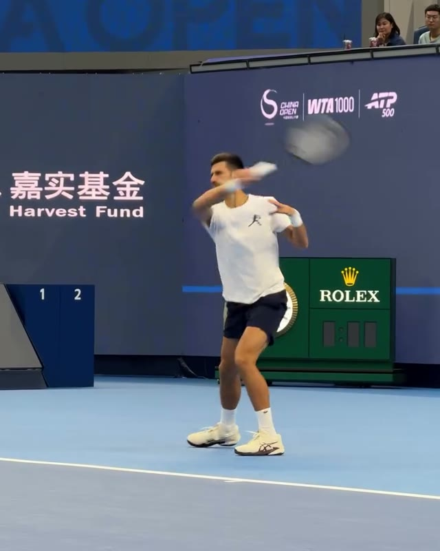
画面差异：两人挥出后身体都在升高、球拍继续随挥；你的左臂也在参与，而不是完全闲置。
正常差异与限制：离地程度、跟步方式与随挥终点允许不同；这张图不能证明你在触球前过早起身。
你该怎么练：验证出球而非姿势：继续向前上方挥出，记录入界、下网和深区入界，不为更像德约加大力量。
05 · 击后重新准备
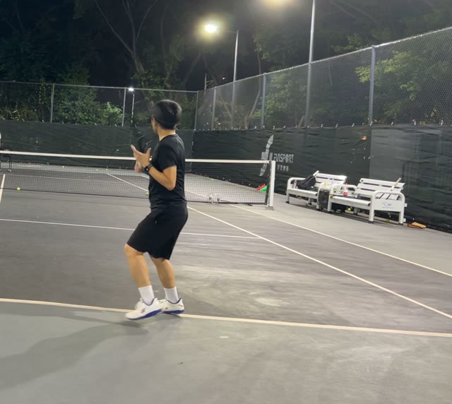
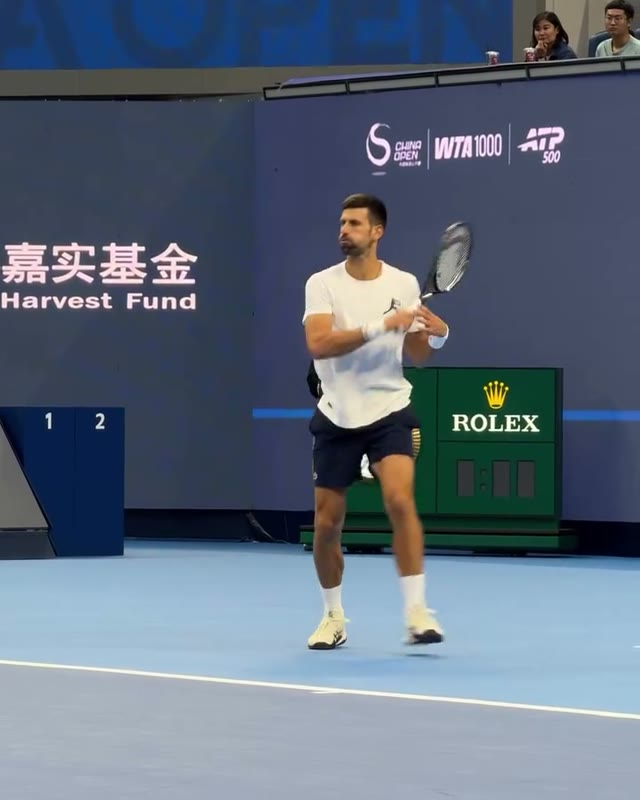
画面差异：双方都在随挥后重新组织持拍与脚下。你这帧已有回到身前准备的动作，不是击后完全不恢复。
正常差异与限制：恢复路线和步法取决于击球位置与下一球，不需要每次照搬同一种交叉步或回场中央。
你该怎么练：检查对手下一次击球时是否可启动；需要连续视频，不能以站稳摆好姿势作为恢复合格线。
补充：参考C的连续动作截图
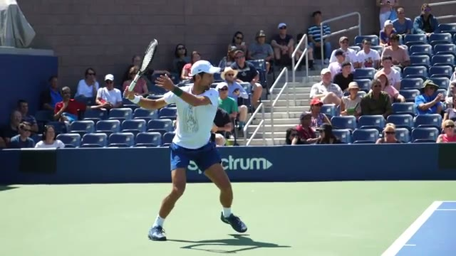
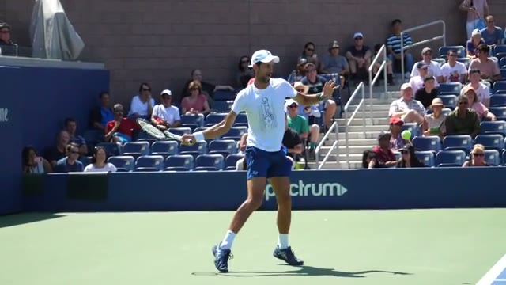
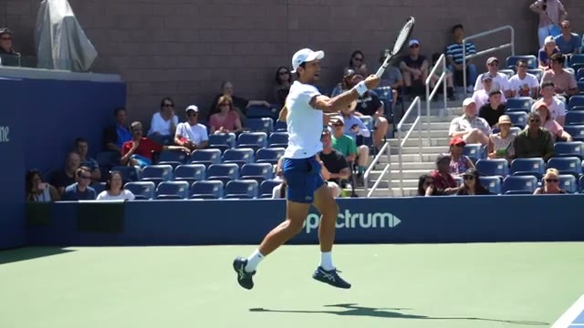
三图来自同一连续镜头，没有跨越约00:21的转场。只看动作连接，不按7、11、13秒的间隔推算真实挥拍速度。